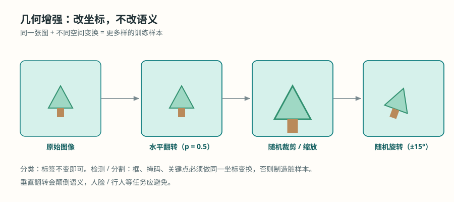
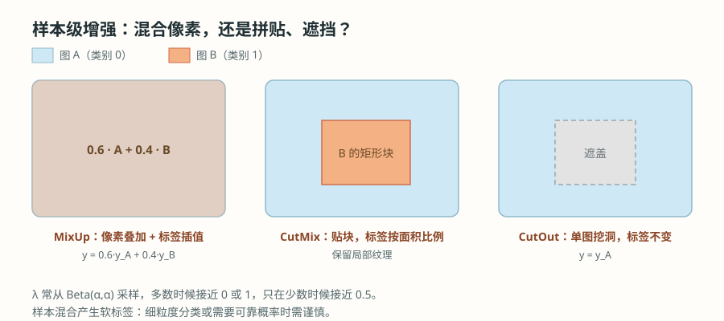
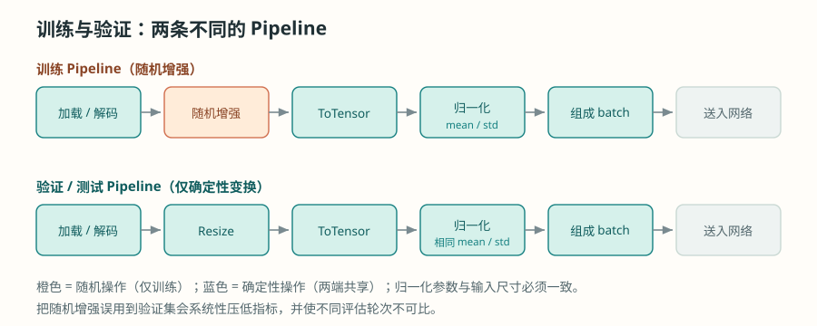

CHAPTER 23 · DATA AUGMENTATION
数据增强与预处理：把不变性写进训练数据
模型只见过固定光照、固定角度、固定背景的图像，一旦换到真实产线就会失效。数据增强不是“凭空造数据”，而是把已知的、不改变语义的变换先验编码成训练样本。本章按几何、颜色、样本混合、自动化到预处理的顺序展开，并说明训练与验证 Pipeline 的区别，以及类别不平衡时该动数据还是动损失。
为什么增强不等于“凭空造数据”
模型学到的是训练数据的统计规律。如果训练图像都来自同一实验室环境（固定光照、固定角度、固定背景），模型就会把这些偶然条件当成“物体的一部分”。一旦部署环境变了——阴天、轻微旋转、背景更杂——这些条件不再成立，精度遂下降。根本原因不是模型太小，而是训练分布没有覆盖部署时的变化。
数据增强（data augmentation）的做法是：在不改变语义标签的前提下，对图像施加已知的变换，生成更多样化的训练样本。一张“猫”水平翻转后仍是“猫”，但模型见到的像素分布更广。它本质上是在训练时把“我们已知的不变性”写成先验，让模型不必从有限样本里重新发现它。
需要分清边界：增强只能扩充已有信息的表达方式，不能创造新信息。少数类只有几张图时，再强的增强也无法凭空变出有意义的特征——那就该考虑迁移学习（第 24 章）或补充数据。
几何增强：注入空间不变性
几何增强变换图像的空间结构，而保持语义不变。随机裁剪迫使模型从局部推断整体（只看到耳朵也要认出猫）；水平翻转利用自然图像的镜像对称假设，且成本几乎为零，是 ImageNet 训练的标配。旋转、缩放、剪切则模拟视角与距离的变化。

| 方法 | 变换参数 | 常见取值 | 适用任务 |
|---|---|---|---|
| 水平翻转 | 翻转概率 | p = 0.5 | 大多数自然图像任务 |
| 随机裁剪 / 缩放裁剪 | 面积比例、宽高比 | scale 0.08–1.0（ImageNet 常用） | 分类、检测、分割 |
| 随机旋转 | 角度范围 | ±10°–±30° | 航拍、医学、工业质检 |
| 随机缩放 | 缩放因子 | 0.5–2.0 | 检测、行人重识别 |
| 剪切 Shear | 剪切角 | ±20° 以内 | 文字、车牌 |
| 垂直翻转 | 翻转概率 | 多数任务慎用 | 航拍（俯视对称） |
两个常见陷阱：一是垂直翻转会颠倒语义，人脸、行人等任务不应使用；二是对检测/分割，几何增强必须对框、掩码、关键点做完全相同的坐标变换，否则标签与图像对不上，训练集会被污染。这也是 Albumentations 这类库把“图像+标注联合变换”作为设计核心的原因。
颜色增强：注入外观不变性
几何增强教的是“位置不变性”，颜色增强教的是“光照与外观不变性”。同一物体在阴天、黄昏、不同白平衡下颜色差异很大；只在“标准光照”上学到的特征在部署时会失效。Color Jitter 是最常用的做法：分别随机调整亮度（brightness）、对比度（contrast）、饱和度（saturation）与色调（hue）。系数写成 0.2 时，含义是[1−0.2, 1+0.2]的乘性抖动。
此外还有灰度化（强制忽略颜色、依赖纹理与形状）、高斯模糊（模拟失焦/运动模糊）、RGB Shift（三个通道各自加偏移）。它们的共同目的是断开“颜色=类别”这种不可靠的伪相关。
# 需安装 torchvision；本页不执行，仅展示参数与顺序
from torchvision import transforms
train_transform = transforms.Compose([
transforms.RandomResizedCrop(224, scale=(0.08, 1.0)),
transforms.RandomHorizontalFlip(p=0.5),
transforms.ColorJitter(brightness=0.2, contrast=0.2, saturation=0.2, hue=0.1),
transforms.ToTensor(), # [0,255] 像素 -> [0,1] tensor
transforms.Normalize(mean=[0.485, 0.456, 0.406],
std=[0.229, 0.224, 0.225]), # ImageNet 统计
])顺序不能搞反：torchvision 的 ColorJitter 作用于 [0,255] 的 PIL 图像，在 ToTensor/Normalize 之前；若先归一化再调色，会使抖动幅度被归一化尺度稀释。
MixUp、CutMix 与 CutOut
前三类变换只动一张图。更激进的一类策略在样本之间做混合，通常能带来更大的泛化收益。
MixUp（Zhang 等，2018）把两张图按同一比例 λ 做凸组合，并用同样的比例混合它们的 one-hot 标签。模型不再看到“纯粹的猫或狗”，而是“60% 猫 + 40% 狗”的混合样本与软标签：
λ 通常从 Beta(α,α) 采样（α 常取 0.2），所以大多数时候 λ 接近 0 或 1，只在少数时候接近 0.5。需要区分：这仍是一个独立同分布的凸组合先验，不是数据本身的信息。

CutMix（Yun 等，2019）不混合像素，而是从一张图里剪一块矩形区域贴到另一张图上，标签按贴入面积占比混合；CutOut（DeVries & Taylor，2017）则只在单图上随机遮盖一个方块、标签不变，迫使模型不依赖单一显著区域。
def mixup(x_i, y_i, x_j, y_j, lam):
"""x: 特征向量(list); y: one-hot 标签(list). 返回混合样本与混合标签."""
x = [lam * a + (1 - lam) * b for a, b in zip(x_i, x_j)]
y = [lam * a + (1 - lam) * b for a, b in zip(y_i, y_j)]
return x, y
x1, y1 = [0.0, 0.0], [1.0, 0.0] # 类别 0
x2, y2 = [1.0, 1.0], [0.0, 1.0] # 类别 1
x, y = mixup(x1, y1, x2, y2, lam=0.6)
assert x == [0.4, 0.4]
assert y == [0.6, 0.4]
assert abs(sum(y) - 1.0) < 1e-9 # 混合标签仍是概率分布
assert mixup(x1, y1, x2, y2, 1.0) == (x1, y1) # lam=1 退化为原样本
print("mixup lam=0.6 -> x =", x, " y =", y)RandAugment 与增强库
手工调增强策略很费时。AutoAugment（Cubuk 等，2018）用强化学习在一组候选操作与幅度上搜索出面向特定数据集的最优策略，但它搜索代价高、策略不易迁移。RandAugment（Cubuk 等，2019）把搜索简化成两个超参数：num_ops（每个样本随机应用几个操作）和 magnitude（统一强度），不需要分阶段搜索。torchvision 的默认是 num_ops=2、magnitude=9（具体含义以官方文档为准）。
工程上很少从零实现增强。常用库的定位不同：torchvision.transforms 是 PyTorch 官方、与 tensor 兼容；Albumentations 以 OpenCV 为后端、操作丰富，并把图像 + 掩码 + 框 + 关键点的联合变换作为设计核心，因此在分割/检测/医学影像中常见；imgaug 适合定义自定义增强链。选型的关键不是“谁操作多”，而是它能不能同步变换你的标注。
# 例：Albumentations 分割 Pipeline（需安装 albumentations 与 opencv，本页不执行）
import albumentations as A
train_aug = A.Compose([
A.RandomResizedCrop(size=(256, 256), scale=(0.5, 1.0)),
A.HorizontalFlip(p=0.5),
A.ShiftScaleRotate(shift_limit=0.05, scale_limit=0.1, rotate_limit=15, p=0.5),
A.ColorJitter(brightness=0.2, contrast=0.2, saturation=0.2, hue=0.1, p=0.8),
A.Normalize(mean=(0.485, 0.456, 0.406), std=(0.229, 0.224, 0.225)),
])
out = train_aug(image=image, mask=mask) # image 与 mask 同步变换预处理 Pipeline 与归一化
一个完整的训练数据流程是：加载 → 解码 → 增强 → ToTensor → 归一化 → 批处理。最容易被忽视的一步是归一化，也最容易将训练与验证弄混。
归一化把像素从 [0,255] 映射到按通道的零均值单位方差。Normalize(mean, std) 对每个通道做 (x/255 − mean) / std；自然图像通常直接用 ImageNet 的全局统计 mean=[0.485,0.456,0.406]、std=[0.229,0.224,0.225]（RGB 三通道）。但如果任务不是自然图像（如 CT、遥感多光谱、红外），就应在自己的训练集上统计每通道的均值与标准差，而不是照搬 ImageNet。

一个常见错误是把 ColorJitter、RandomCrop 等随机操作写进验证 Pipeline，导致同一模型每次评估结果不同；另一个错误是训练与验证用了不同的 mean/std，使输入分布不一致。规范做法是把 mean/std 与目标尺寸当作训练配置的一部分，训练与评估严格共享。
类别不平衡与 Focal Loss
数据增强解决“多样性不足”，而类别不平衡是另一个困境：某些类别样本远多于其他，如良品占 99%、缺陷仅占 1%。此时模型把所有样本判为多数类也能拿到 99% 准确率，但这是无用的。常用策略有三类：
- 重采样：对少数类过采样（最好配合增强生成不同版本）或对多数类欠采样。
- 类别权重：在交叉熵中给少数类更大的权重，让它的错误得到更大惩罚。
- 调整损失：用 Focal Loss 降低“好分的样本”对损失的贡献。
Focal Loss（Lin 等，2017，随 RetinaNet 提出）在交叉熵前乘一个调节因子 (1−p_t)^γ，其中 p_t 是模型对正确类别的预测概率：
当 p_t→1（已分对）时调节因子趋近 0，易分样本的梯度被压低；p_t 小（难分）时接近 1。γ 常取 2，且 γ=0 时退化为加权的交叉熵。
import math
def focal_loss(p_t, gamma=2.0, alpha=1.0):
"""p_t: 模型对正确类别的预测概率, 取值 (0,1]. 返回单样本损失."""
return -alpha * (1 - p_t) ** gamma * math.log(p_t)
# gamma=0 退化为加权交叉熵 -alpha*log(p_t)
assert abs(focal_loss(0.9, gamma=0.0, alpha=1.0) + math.log(0.9)) < 1e-12
easy = focal_loss(0.9, gamma=2.0) # 易分样本
exactly = focal_loss(0.1, gamma=2.0) # 难分样本
assert exactly > easy * 10 # 难分样本权重被保留
# 类别权重与频率成反比
counts = [10000, 200]
w = [1.0 / c for c in counts]
w = [x / sum(w) * len(counts) for x in w]
assert w[1] > w[0] * 10
print(f"focal easy={easy:.4f} hard={exactly:.4f} weights={[round(x, 4) for x in w]}")注意 Focal Loss 改变的不只是梯度尺度，也会影响概率校准：模型输出的置信度不再等于真实正确率。需要概率解释（如风险分级）时，应单独做校准（第 14 章）。
适用条件与边界
- 增强不能创造信息：少数类只有几张图时，任何增强都无法变出有意义的特征；应改用迁移学习（第 24 章）或补充数据。
- 增强必须与任务一致：垂直翻转会颠倒人脸/行人语义；检测与分割的几何增强必须同步变换标注框/掩码/关键点。
- 训练与评估 Pipeline 必须分开：验证/测试不做随机增强，且归一化参数与输入尺寸要与训练严格一致。
- 样本混合会改变监督信号：MixUp/CutMix 产生软标签，在细粒度分类或需要可靠概率时可能不利；增强强度过大也会降低精度。
- Focal Loss 的 γ、α 不是通用常数：它们依赖数据集与任务，需验证集调参，且会影响概率校准。
检查理解：为什么检测/分割任务里几何增强必须同步变换标注？
分类任务的标签只有类别，图像怎么变标签都不变。但检测的标签是框坐标、分割的标签是掩码，它们是与像素坐标绑定的。如果只旋转/裁剪图像而不变换框或掩码，输入与监督信号就错位了——模型学的就是“错误坐标上的目标”，属于脏数据。Albumentations 把“图像+标注联合变换”作为设计核心，正是为了避免这类错位。
原始资料与口径
本页的 MixUp/CutMix/CutOut、AutoAugment/RandAugment、Focal Loss、torchvision 与 Albumentations 均以对应原论文与官方文档为准；具体增强强度、num_ops/magnitude 等属于可调超参，本页不固化精度提升数值。
- mixup: Beyond Empirical Risk Minimization (Zhang 等, 2018, arXiv:1710.09412)
- CutMix: Regularization Strategy to Train Strong Classifiers with Localizable Features (Yun 等, 2019, arXiv:1905.04899)
- Improved Regularization of Convolutional Neural Networks with Cutout (DeVries & Taylor, 2017, arXiv:1708.04552)
- AutoAugment: Learning Augmentation Strategies from Data (Cubuk 等, 2018, arXiv:1805.09501) · RandAugment: Practical Automated Data Augmentation (Cubuk 等, 2019, arXiv:1909.13719)
- Focal Loss for Dense Object Detection (Lin 等, 2017, arXiv:1708.02002)
- Albumentations: Fast and Flexible Image Augmentations (2018, arXiv:1809.00916)
- torchvision.transforms 官方文档